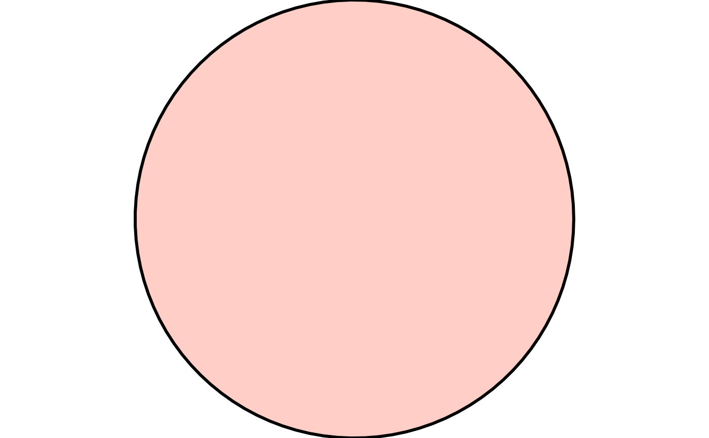

style is a container for the graphical properties passed to
grid::gpar() when a drawable object is drawn.
Usage
style(
color = "black",
fill = "black",
linewidth = 1,
linetype = "solid",
linejoin = "round",
lineend = "round",
linemitre = 10,
rule = "evenodd",
color_alpha = 1,
fill_alpha = 1
)Arguments
- color
Stroke colour. Default
"black".- fill
Fill colour or pattern. Either a plain colour string, or the output of a
fill_*()helper –fill_solid(),fill_none(),fill_hatch(),fill_crosshatch(),fill_stipple(),fill_noise(),fill_gradient(), orfill_vignette(). Defaultfill_solid("black")(i.e."black").- linewidth
Line width. Default
1.- linetype
Line dash pattern, forwarded to
grid::gpar()'slty. Either a named type ("solid","dashed","dotted","dotdash","longdash","twodash","blank"), an integer code0:6, or a custom hex dash-pattern string (e.g."13") – seegrid::gpar()andgraphics::par()'sltyfor the full set of accepted forms, which aren't independently re-validated here. Default"solid".- linejoin
Line join style at each vertex, forwarded to
grid::gpar()'slinejoin. One of"round","mitre", or"bevel". Most visible on closed shapes with few, sharp vertices, or on any drawable stroked with a thicklinewidth. Default"round".- lineend
Line end style at a path's free endpoints, forwarded to
grid::gpar()'slineend. One of"round","butt", or"square". Only visible on"path"-geometry drawables (e.g.curve_line(),curve_bezier()) – a"polygon"-geometry drawable has no free endpoint, since its outline closes back on itself. Most visible at a thicklinewidth. Default"round".- linemitre
Mitre limit, forwarded to
grid::gpar()'slinemitre. Only takes effect whenlinejoin = "mitre": at a vertex sharper than this limit allows, the mitred corner is truncated to a bevel instead, to avoid an arbitrarily long spike. Must be at least1. Default10, matchinggrid::gpar()'s own default.- rule
Fill rule used when a drawable's own
pointshas more than one sub-path (see xy'sid), forwarded togrid::pathGrob()'s ownruleargument. One of"evenodd"(default) or"winding"."evenodd"fills a region if it's enclosed by an odd number of sub-paths, regardless of each sub-path's own vertex winding direction – a sub-path nested inside another becomes a hole purely from geometric nesting, with no need to get vertex order right by hand, which is why it's the default."winding"instead fills based on net signed winding number, which depends on each sub-path's own direction – only useful for constructions that specifically need that direction-sensitive behavior. Has no effect on a drawable with only one implicit sub-path (every currentshape_*()/curve_*()constructor), since both rules agree there.- color_alpha
Stroke opacity, applied to
colorindependently offill_alpha. Must be a number in[0, 1], where0is fully transparent and1(the default) is fully opaque. Applied by baking the value intocolorviagrDevices::adjustcolor()at draw time (seedraw()'s internalapply_alpha()helper), not viagrid::gpar()'s ownalphaargument –gpar()'salphaapplies uniformly to both stroke and fill on the same grob, which would couplecolor_alphaandfill_alphatogether. Ifcoloralready has its own alpha channel (e.g. an"#RRGGBBAA"hex string),color_alphamultiplies through it rather than overriding it.- fill_alpha
Fill opacity, applied to
fillindependently ofcolor_alpha, via the samegrDevices::adjustcolor()mechanism ascolor_alpha. Must be a number in[0, 1]. Default1. Only has an effect whenfillis a plain colour string (as fromfill_solid()orfill_none()) – silently inert whenfillis a pattern or gradient (the output of any otherfill_*()helper), sincegrDevices::adjustcolor()has no defined effect on aGridPatternobject. This mirrorsfillitself already having no effect for"path"/"points"-geometry drawables (see drawable'sgeometrydocs), andlineend/linemitrealready being inert for some geometries – geometry- or fill-type-conditional inertness, not an error, is this package's existing convention for style properties that don't universally apply.
See also
Other core structure:
canvas(),
draw(),
drawable(),
sketch(),
xy()
Examples
style(color = "steelblue", fill = "lightblue", linewidth = 2)
#> <sketchpad::style>
#> @ color : chr "steelblue"
#> @ fill : chr "lightblue"
#> @ linewidth : num 2
#> @ linetype : chr "solid"
#> @ linejoin : chr "round"
#> @ lineend : chr "round"
#> @ linemitre : num 10
#> @ rule : chr "evenodd"
#> @ color_alpha: num 1
#> @ fill_alpha : num 1
style(fill = fill_hatch(angle = 30))
#> <sketchpad::style>
#> @ color : chr "black"
#> @ fill :List of 9
#> .. $ f :function ()
#> .. $ x : 'simpleUnit' num 0.5npc
#> .. ..- attr(*, "unit")= int 0
#> .. $ y : 'simpleUnit' num 0.5npc
#> .. ..- attr(*, "unit")= int 0
#> .. $ width : 'simpleUnit' num 0.0866npc
#> .. ..- attr(*, "unit")= int 0
#> .. $ height: 'simpleUnit' num 0.05npc
#> .. ..- attr(*, "unit")= int 0
#> .. $ hjust : num 0.5
#> .. $ vjust : num 0.5
#> .. $ extend: chr "repeat"
#> .. $ group : logi TRUE
#> .. - attr(*, "class")= chr [1:2] "GridTilingPattern" "GridPattern"
#> @ linewidth : num 1
#> @ linetype : chr "solid"
#> @ linejoin : chr "round"
#> @ lineend : chr "round"
#> @ linemitre : num 10
#> @ rule : chr "evenodd"
#> @ color_alpha: num 1
#> @ fill_alpha : num 1
# linejoin/linemitre are most visible on a thick-stroked shape with a
# sharp vertex
star <- shape_polygon(n = 5, radius = 1, fill = "white")
draw(shape_stroke(
x = star@points@x, y = star@points@y, width = 0.25,
linejoin = "mitre", linemitre = 1.5
))
# color_alpha/fill_alpha control stroke/fill opacity independently
draw(shape_circle(
radius = 1, color = "black", fill = "tomato",
color_alpha = 1, fill_alpha = 0.3, linewidth = 3
))

# lineend only affects a path's free endpoints, not a closed polygon
draw(curve_line(
x = c(0, 1, 2), y = c(0, 1, 0), linewidth = 15, lineend = "square"
))